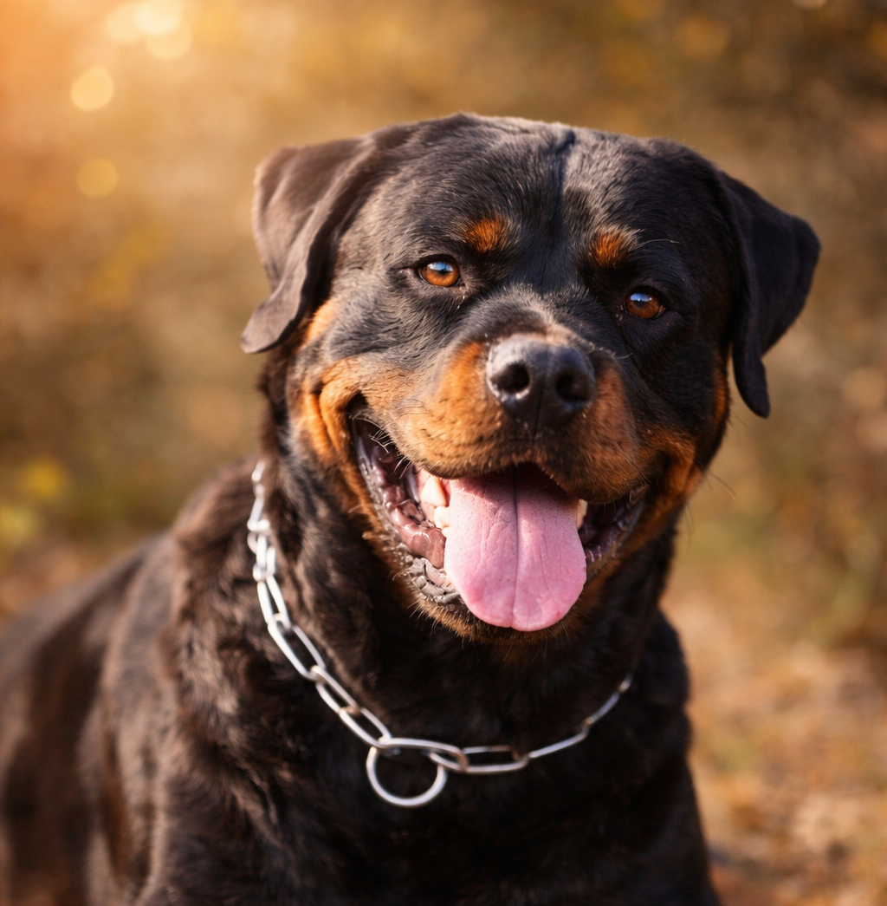
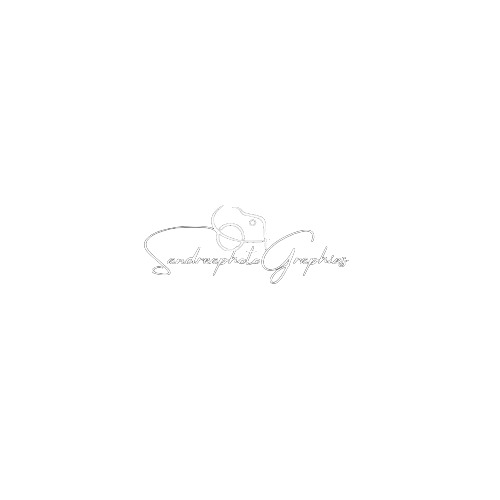

Empreinte d'âme
Photographe Animalier
Drôme / Ardèche
"Capturer ce lien unique entre vous et votre animal."
Photographe animalier domestique en Drôme Ardèche, je capture bien plus que des images : je révèle le lien unique et émotionnel qui vous unit à votre animal.
Chien, chat, cheval, lapin ou même poule… chacun a une présence, une âme, une place dans votre vie.
Chaque séance est une parenthèse hors du temps, un moment pour ressentir, pour ralentir… et pour créer des souvenirs sincères et profonds que vous garderez toute votre vie.

Portfolio
Chaque animal a une histoire. Un regard. Une manière d’être au monde. À travers mon portfolio de photographe animalier domestique, je capture ces instants uniques : un chien joueur, un chat apaisant, un cheval puissant, un lapin délicat…
"Des images qui ne se regardent pas seulement…
elles se ressentent."
Photographier, c’est ressentir ce qui ne s’explique pas
Il y a dans le regard d’un animal quelque chose de vrai. Quelque chose qui ne se dit pas… mais qui se ressent profondément. Photographier votre chien, votre chat, votre cheval ou votre lapin, ce n’est pas seulement créer une belle image. C’est capturer une présence, une énergie, un instant de vie. En tant que photographe animalier domestique en Drôme Ardèche, je m’attache à révéler ce lien invisible, cette connexion sincère qui vous unit à eux.
"Parce que ce que vous vivez avec eux mérite d’être ressenti encore et encore , même des années plus tard."Formules
Une expérience autour de votre lien
Formule Essentiel
-
3 photos HD
Spécial réseaux sociaux
Option Tirages en plus
Idéal pour garder un souvenir sincère de votre chien, chat ou autre animal de compagnie.
Super !
Formule Signature
-
5 photos HD
1 portrait Fine Art
Option Tirages en plus
Une expérience plus immersive, pensée pour raconter votre histoire.
Nous prenons le temps de créer des images fortes, sensibles et artistiques.
Pour ceux qui veulent des photos qui reflètent profondément leur lien unique et émotionnel.
J'adore !
Formule Prestige
-
10 photos HD
1 portrait Fine Art
1 album (valeur ~100€)
Une expérience complète et haut de gamme, où chaque détail est pensé pour sublimer votre animal et votre relation.
Création artistique, accompagnement personnalisé, images puissantes et intemporelles.
Pour transformer votre histoire en véritable œuvre photographique.
Professionnels
Éleveur, toiletteur, ferme pédagogique…
Votre métier est une passion, un engagement, un savoir-faire précieux. En tant que photographe animalier, je vous accompagne pour mettre en valeur votre activité à travers des images authentiques et impactantes. Chiens, chats, chevaux ou animaux de ferme : je capture votre environnement, votre relation avec eux, et l’essence de votre travail. Ces images vous permettent de creer un lien de confiaance avec vos clients, valoriser votre metier et renforcer votre image de marque.
Mon objectif : révéler l’âme de votre métier et donner de la valeur à ce que vous transmettez chaque jour.
La boutique
Tirage d'art
Offrez-vous un morceau d'émotion à travers mes photographies dispionibles à la vente.
Des images mettant en lumière le vivant à travers le portrait animalier, la macrographie ainsi que les paysages
afin de révéler la richesse et la diversité de notre monde.
Chaque tirage est pensé pour apporter une présence, une émotion et une douceur dans votre intérieur.


{kind=link}
{kind=link}
{kind=link}
{kind=link}
{kind=link}
{kind=link}
{kind=link}
{kind=link}
{kind=link}
{kind=link}
{kind=link}
{kind=link}
{kind=link}
Contact
Réserver votre séance photo animale en Drôme Ardèche
Envie de créer des souvenirs uniques avec votre animal ?
Je vous accompagne avec bienveillance pour capturer ce lien qui vous unit, dans une expérience douce, naturelle et authentique.
Chien, chat, cheval, lapin, poule… tous ont leur place.
